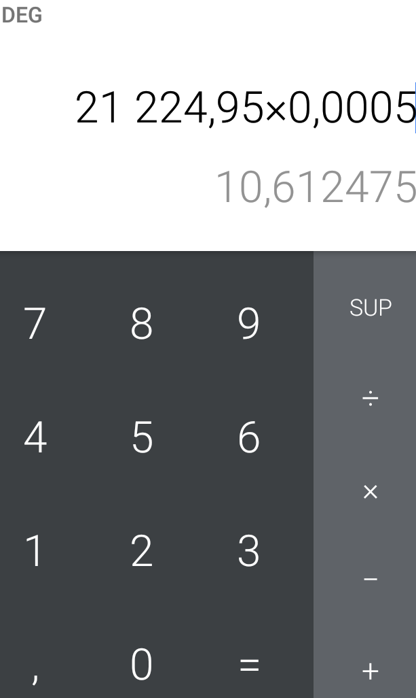

Comment vous pouvez convertir vos cryptomonnaies en gourdes, en dollars et d'autres devices.
Vous pourrez le faire directement sur votre calculatrice sans passer par aucune plateforme, vous ouvrez votre calculatrice puis tapez le taux actuel à multiplier par le quantité de cryptomonnaie vous voulez convertir (24337.53x0.0005=12.16USD) c'est très simple.Si vous avez python installer sur votre ordinateur ou votre téléphone vous pouvez utiliser notre code python, faire un copier coller.
